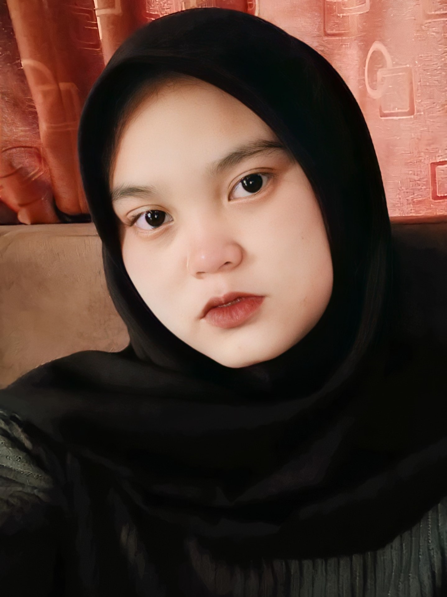

Biodata
Hasil Uts Pemrogrman Web

Fakultas : Teknik Dan Ilmu Komputer
Jurusan :Informatika
Npm : 20312010
Nama : Yesi Meliyana
No.absen : 09
Instagram : @heyes
Hoby : Nonton
Water Park (atau Waterpark), adalah “sebuah taman rekreasi air atau sebuah taman hiburan yang memiliki area bermain air, seperti seluncuran air (water slide), bantalan air (splash pad), spraygrounds (area main air sembur), kolam arus / sungai malas (Lazy River), atau mandi rekreasi lainnya, berenang, dan lingkungan barefooting. Kalau kalian merindukan aktivitas berenang di daerah pegunungan, mungkin waterpark bumi kedaton bisa mewakili suasana itu. Waterpark Bumi Kedaton Terletak di bumi kedaton, Batu Putuk, Kota Bandar Lampung, Lampung 35234Hanya berjarak beberapa meter dari kebun binatang Bumi Kedaton. Sedangkan untuk harga tiketnya sendiri sangat terjangkau hanya 40ribu/orang. Untuk jam buka nya sendiri, Waterpark Bumi Kedaton buka setiap hari dari jam 08.00 – 16.30 WIB.
Siang itu usai sekolah online, saya dan anak saya meluncur menggunakan kendaraan roda dua ke arah WaterPark Bumi Kedaton,Hanya memakan waktu 25 menit untuk sampai ketempat tujuan, posisi waterpark sangat eyecatching karena dilengkapi dengan bianglala yang terlihat dari jalan raya.Saat masuk. Wow! Saya langsung jatuh cinta dengan suasananya yang dikelilingi pegunungan. Tentu saja adem banget. Ada seluncuran, pondok-pondok tempat bersantai nan asri. Fasilitasnya juga lengkap meliputi tempat bilas, ganti pakaian, toilet yang bersih, kantin, juga mushola.
Tak terasa hampir 2 jam bermain air, bada ashar kami keluar dari kolam, beranjak untuk bilas dan berganti pakaian lalu salat asar. Kemudian kami pun memutuskan untuk pulang, Waterpark Bumi Kedaton merupakan tempat wisata yang sangat direkomendasikan untuk dikunungi, karena selain banyak wahana yang ada di waterpark lingkungannya sendiri pun sangat lah menyejukkan.
Bumi Kedaton, Jl. WA Rahman, No. 1 – 2 – 3, Batu Putuk, Teluk Betung Utara, Bandar Lampung City, Indonesia 35132
Setiap Hari, 08.00 – 16.30 WIB
0721-7488047